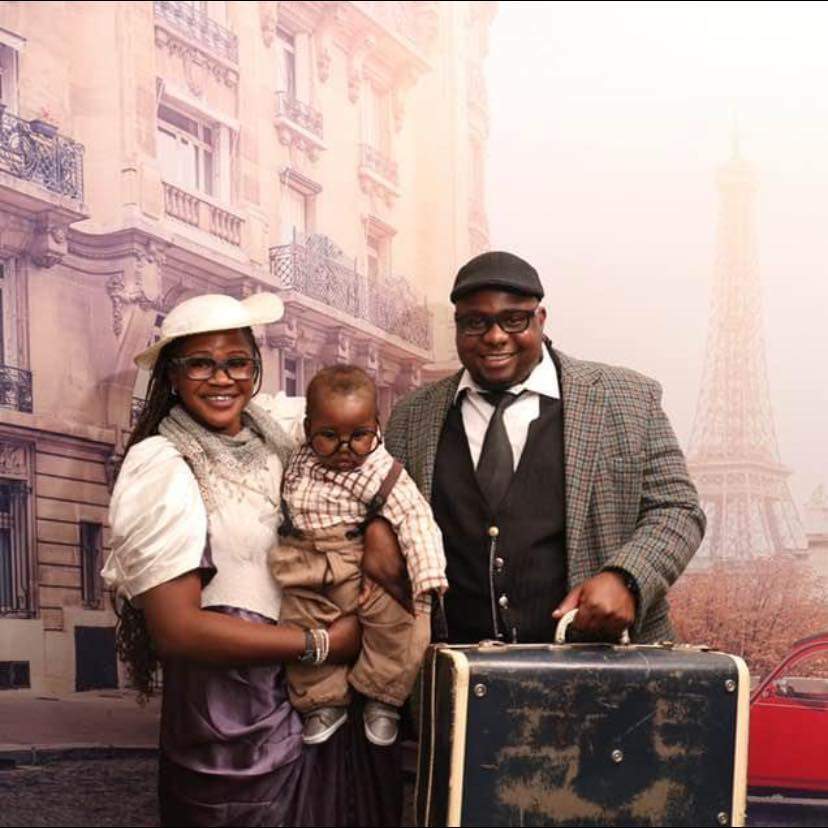

Tinashe Mhike | WDD 130
Hello! My name is Tinashe Mhike. I am originally from Zimbabwe but moved to South Africa in 2010 when I was 16 years old. I’m married and a proud father of two boys. I enjoy watching soccer and movies in my free time. I currently work as a Financial Controller, but I have a strong interest in software design and development—particularly web design. The idea of creating a website from scratch really excites me, and I am looking forward to learning and growing through this course.